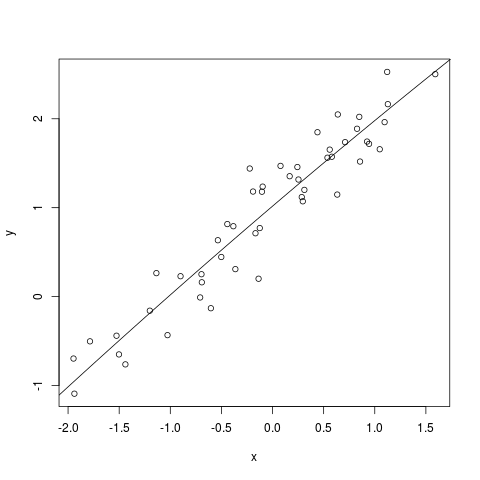

There are two types of testing that we want to do in the context
of linear models:
Given a model we want to know if it is a good
fit or not.
Given a model that we already know to be a good fit, we want
to know if we can have a submodel that is also a good
fit. The type of submodel that we have in mind here is
where $E(\v y)$ lies in some given $W\le \col(X).$
We address the latter question here. To understand what we are
going to do, here are a few examples.
EXAMPLE:
Suppose that we have fitted a model $y_i = \beta_0 + \beta_1
x_i + \beta_2 x_i^2 + \epsilon_i.$ The plot looks this:

Then we wonder if the quadratic term is really needed or not. In
other words, we are trying to understand if the submodel $y_i =
\beta_0 + \beta_1 x_i + \epsilon_i$ would do just as
well. Here $X$ has three columns:
$$
X = \left[\begin{array}{ccccccccccc}
1 & x_1 & x_1^2\\
\vdots & \vdots & \vdots\\
1 & x_n & x_n^2\\
\end{array}\right],
$$
and $W$ is the span of the first two columns of $X.$
Here is another example.
EXAMPLE:
In the 1-way ANOVA model $y_{ij} = \mu + \alpha_1 +
\epsilon_{ij}$ we want to test $H_0:\alpha_2=2 \alpha_1.$
If we write
$$
\v \beta = \left[\begin{array}{ccccccccccc}\mu\\ \alpha_1\\\alpha_2\\\vdots\\\alpha_p
\end{array}\right],
$$
then under $H_0$ the vector becomes
$$
\left[\begin{array}{ccccccccccc}\mu\\ \alpha_1\\2 \alpha_1\\\vdots\\\alpha_p
\end{array}\right] =
B \v \beta,
$$
where the $B$ is just the identity matrix with the 3rd row
(the one corresponding to $\alpha_2$) replaced by $(0,2,0,...,0).$
Hence the model under $H_0$ is $\v y = XB\v \beta + \v \epsilon.$
So here $W = \col(XB).$
The test procedure is intuitive:
Fit the larger model (already known to be a good fit). The
$RSS$ for this model gives us an yardstick about how much
error is accepable.
Next we fit the submodel, and find the $RSS$ for
that. Of course, this must be $\ge$ the $RSS$ for the
full model.
We compare the increase in $RSS$ to the acceptable
amount of $RSS$ from step 1.
This common sense procedure turns out to be also the LRT, as may
be seen quite easily as follows.
The LRT rejects $H_0$ for large values of
$$
\frac{\sup_{\Theta} L(\theta)}{\sup_{\Theta_0} L(\theta)}.
$$
In our case, $\theta = (\v\beta,\sigma^2)$ and
$$
L(\theta) = (\sigma^2)^{-n/2} \exp\left[ -\frac{\|y-X \v\beta\|^2}{2 \sigma^2} \right].
$$
So
$$
\sup_{\Theta} L(\theta) = \left(\frac{n}{RSS} \right)^{n/2}e^{-n/2},
$$
and
$$
\sup_{\Theta_0} L(\theta) = \left(\frac{n}{RSS_0} \right)^{n/2}e^{-n/2},
$$
Hence
$$
LR = \left(\frac{RSS_0}{RSS} \right)^{n/2}.
$$
So we reject $H_0$ for large values
of $\frac{RSS_0}{RSS},$ or, equivalently, large values
of $\frac{RSS_0}{RSS}- = \frac{RSS_0-RSS}{RSS}.$
Let $\v y\sim N_n(0, I).$ Then $\|\v y\|^2\sim \chi^2_{(n)}.$
We shall take this as the definition of $\chi^2 $
distribution. We shall also use the notation $U \sim \sigma^2
\k{n}$ to mean $\frac{U}{\sigma^2}\sim\k{n}.$
Here is a basic fact that e shall use repeatedly:
In particular, if $A$ is an orthogonal matrix,
and $\v y\sim N_n(\v 0, \sigma^2 I),$ then $A\v y\sim
N_n(\v 0, \sigma^2 I),$ as well. Thus, rotation does not
change the distribution of the components of a random vector with
IID Gaussian components.
Proof:Start with an ONB of $V.$ Extend to an ONB
of ${\mathbb R}^n.$ Express $\v y$ in this new basis.
In terms of matrices, this means creating an orthogonal
matrix $P$ by stacking the ONB vectors as rows, and then
computing $P\v y.$
The first $r$ components of this vector gives $P_V(\v y).$
So $\|P_V(\v y)\|^2$ is just the sum of squares of the
first $r$ entries. Hence the result.
[QED]
Proof:Take $\v z = \v y-\v \mu.$ Then $P_V(\v z) = P_V(\v
y-\v \mu) =
P_V(\v y)-P_V(\v \mu) = P_V(\v y).$ Now apply the last theorem
to $\v z.$[QED]
Proof:
Let $\v z = \v y-\v \mu.$ Then $P_V(\v z) = P_V(\v y)$
and $P_W(\v z) = P_W(\v y).$ Now apply the last theorem
with $\v z$ in place of $\v y$ there.
[QED]
We shall consider the linear model
$$
\v y =X \v\beta + \v\epsilon,
$$
where $\v \epsilon\sim N_n(0, \sigma^2 I).$
Proof:
Here $\v y\sim N_n(X \v\beta, \sigma^2 I),$ and $X \v\beta\in
\col(X).$ Hence the result.
[QED]
Proof:(Simplification thanks to Sayak)
We can split $\col(X)$ into two mutually orthogonal
subspaces: $W$ and $U=W^\perp\cap
\col(X).$(Care!)
Start with any ONB of $W.$ Extend to ONB of $\col(X).$
Then the span of the added vectors is $W^\perp\cap \col(X).$
Beware the wrong argument: Since $W\oplus W^\perp = {\mathbb R}^n,$
hence $\col(X) = {\mathbb R}^n\cap \col(X) = (W\oplus W^\perp)\cap
\col(X) = (W\cap \col(X)) \oplus (W^\perp\cap \col(X)) = W\oplus
(W^\perp\cap \col(X)).$
This is wrong because $\cap$ does distribute in general over $\oplus.$
In order to apply the theorem above we need to know two numbers,
the rank of $X$ and the dimension of $W.$
We have already discussed how to guess the rank of $X$
intuitively. Here we shall discuss how to guess the dimension
of $W$ when $H_0$ is given in a special form. The most
common form of $H_0$ is where we set some estimable
parametric functions equal to 0. For example, in the 1-way ANOVA
model $y_{ij} = \mu + \alpha_i + \epsilon_{ij},$ we may
test $\alpha_1=2\alpha_2$ or "all $\alpha_i$'s
equal". Such hypothese are of the general form $L \v \beta = \v 0,$
where $\row(L)\le\row(X).$
Each row of $L$ imposes a restriction on the parameter
space, and hence makes $W$ smaller and smaller
inside $\col(X).$ So intuitively we can hope that
$$
dim(W) = r(X) - r(L).
$$
Indeed, this is the case. We shall now prove this formally.
Proof:Case I: $X$ full column rank:
Think of $W$
as the image of $\nul(L)$ under the linear
transformation $\v v\mapsto X\v v.$
Since $X$ is full column rank, this linear transformation is
one-one. So the image has the same dimention as $\nul(L) =
p-r(L).$ Since $r(X)=p,$ hence the result follows.
Case II: $r(X) = r < p$:
We shall reduce this case to the earlier one. The idea is to pick a
basis of $\col(X)$ and work with that.
More precisely, we
take any rank factorisation $X =
BC.$(What's that?)
By a rank factorisation $X=BC$ we mean: taking any basis
of $\col(X)$ and stacking them side by side to form a
matrix $B.$ If $X$ is $n\times p$
with $r(X)=r,$ then $B$ must be $n\times r.$
Now, each column of $X$ is a linear combination of the
columns of $B.$ Collecting the coefficients of these linear
combinations to form a matrix $C,$ we get $X_{n\times p} =
B_{n\times r}C_{r\times p}.$
By construction $r(B)=r(X)=r,$ and hence $B$ is full
column rank.
Interestingly, $C$ must be full row rank,
with $r(C)=r.$ Also the rows of $C$ form a basis of $\row(X).$
Then $C$ is a
full row rank matrix, whose rows form a basis of $\row(X).$
Since $\row(L)\le\row(X),$ hence $ L = DC$ for some
matrix $D.$ Hence
$$
W=\{BC \v\beta ~:~ DC \b \beta = \v 0\}.
$$
Notice that $\col(C)={\mathbb R}^r.$ So $\v \gamma\equiv C\v \beta $ may be any
vector in ${\mathbb R}^r.$ Thus
$$
W=\{B \v \gamma ~:~ D \b \gamma = \v 0\}.
$$
Case I applies here, since $B$ is full column
rank. So we have
$$
dim(W) = r(B)-r(D) = r(X)-r(L),
$$
as required.
[QED]
Consider the 1-way ANOVA model $y_{ij} = \mu_i +
\epsilon_{ij}$, where $i=1,...,I$ and $j=1,...,J.$
We are testing $H_0: \mu_1=0.$ Show
that $RSS_0-RSS = J(\b y_{1.})^2.$ Hence show that the LRT
test statistic is
$$
\frac{J(\b y_{1.})^2}{\h \sigma^2}.
$$
This is intuitive, as this is actually
$$
\left(\frac{\h \mu_1}{\h SE(\h \mu_1)}\right)^2,
$$
where $SE(\h \mu_1)$ is the standard error of $\h
\mu_1,$ and its estimator $\h SE(\h \mu_1)$ is obtained
by plugging the unbiased estimator $\h \sigma^2$ in place of $\sigma^2.$
Thus, we do not need to fit the submodel at
all.
We are working with $\v y = X \v \beta + \v \epsilon.$
Let $\v \ell\in\row(X).$ Want to test $H_0: \v \ell' \v \beta =
0.$ Show that the LRT test statistic is actually
$$
\left(\frac{\v\ell'\h \beta}{\h SE(\v\ell'\h \beta)}\right)^2,$$
where
$
\h SE(\v\ell'\h \beta)
$
is obtained by plugging the unbiased estimator $\h \sigma^2$
in place of $\sigma^2 $ in the expression for $SE(\v\ell'\h \beta).$
Same model as in the first problem. But now we want to test $H_0: \mu_1=
\mu_2.$ Apply the last problem to perform the LRT without
having to fit a submodel.
Consider the 1-way ANOVA model: $y_{ij} = \mu_i +
\epsilon_{ij}$ where $i=1,...,5.$ Is the LRT test
for $H0:\mu_1 = \mu_2$ equivalent to the $t$-test
based on only the subset of the data belonging to the first two
groups? [Hint: Think intuitively before proceeding with
algebra.]
In each of the following cases you are given a linear model
and an $H_0.$ You have to find the LRT test statistic.
Consider the 2-way ANOVA model $y_{ij} = \mu +\alpha_i +
\beta_j + \gamma_{ij}+\epsilon_{ij}.$
Someone asks you to test $\v\ell'\v \beta = 0$ for some $\v\ell\in\row(X).$
Explain why this is impossible to do using LRT.
Consider the linear model $\v y = X \v \beta + \v
\epsilon,$ where $X$ is $n\times p.$
Let $W\le{\mathbb R}^n$ and $\v c\in{\mathbb R}^n$ be such that $W+\v
c\subseteq\col(X).$ Then show that
under $H_0: X\v \beta \in W+\v c,$ we have $RSS_0-RSS\sim \sigma^2
\k{s-r},$ where $s = dim(W).$ [Here $RSS_0$ is the
squared distance from $\v y$ to $W+\v c.$
See this picture to
understand. Mathematically, it is the squared norm of the
residual when $\v y-\v c$ is projected onto $W.$]
Use the result of the above exercise to explicitly derive a
test for $H_0: \alpha_1 = \alpha_2+1$ in the linear
model $y_{ij}=\mu+\alpha_i+\epsilon_{ij}.$
Show that the test statistic may be conveniently written as
$$
\left(\frac{\h \alpha_1-\h \alpha_2-1}{\h SE(\h \alpha_1-\h \alpha_2)}\right)^2.
$$
Comments
To post an anonymous comment, click on the "Name" field. This
will bring up an option saying "I'd rather post as a guest."
 Here is another example.
Here is another example.
{kind=link}